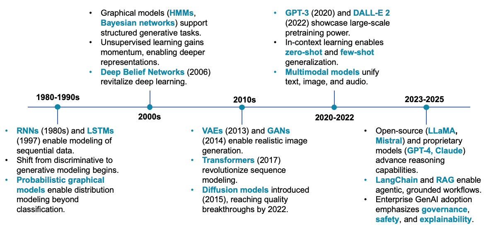

Generative Models Overview
1 Evolution of AI Capabilities
Generative AI could add $4.4 trillion in annual economic value globally, according to McKinsey. That’s not a distant projection—organizations are already deploying these systems in production. Capturing that value while managing the risks requires understanding where generative AI fits in the broader evolution of AI capabilities.
AI has moved through three distinct phases, each expanding what machines can do while introducing new challenges. Traditional AI operates on fixed rules—reliable for repetitive tasks like fraud detection or email filtering, but requiring constant human direction. Generative AI learns patterns from data to create new content: text, images, code, synthetic data for testing. Agentic AI takes this further, planning multi-step workflows and pursuing goals with minimal human oversight.
Here’s how they compare:
| Capability | Traditional AI Rule-driven tools |
Generative AI Smart assistants |
Agentic AI Autonomous actors |
|---|---|---|---|
| What it does | Follows hard-coded logic and rules | Understands prompts and generates output | Plans, reasons, and acts across steps |
| How it behaves | Rigid, predictable | Creative but guided | Goal-seeking and adaptive |
| Human involvement | Fully manual setup and supervision | Needs context and oversight | Can operate independently (with guardrails) |
| Strengths | Reliable on structured tasks | Great at summarizing, drafting, generating | Handles multistep workflows |
| Best used for | Repetitive decisions and automation | Insight generation and copiloting | Full process orchestration |
Each phase unlocked new capabilities but also introduced new failure modes. Traditional AI breaks when edge cases appear. Generative AI can produce convincing but completely incorrect outputs. Agentic AI raises questions about control and accountability when systems operate autonomously. Understanding this progression matters because implementation decisions depend on which type of AI you’re deploying—and in regulated industries like banking and healthcare, the governance requirements differ substantially.
2 Why Generative AI Matters
Generative AI creates novel content—text, images, code, synthetic data—by learning patterns from existing examples. Since 2022, adoption has accelerated rapidly. Models like ChatGPT, Claude, and Gemini are deployed across use cases ranging from content generation and fraud detection to software development and clinical documentation.
McKinsey estimates that generative AI could contribute up to $4.4 trillion in annual global economic value, with wide-ranging implications for productivity, personalization, and decision support. However, moving from promise to reality remains challenging. While 88% of organizations now use AI regularly, most are still in the pilot phase. Only about one-third have successfully scaled AI across their enterprises, and just 39% report any measurable impact on earnings. The gap between individual use case success and enterprise-wide transformation is the defining challenge of 2025.
The technology introduces significant risks alongside its capabilities. GenAI can generate outputs that appear authoritative but are incorrect, biased, or harmful. In banking, healthcare, and legal contexts where errors carry serious consequences, deployment requires strong governance frameworks, human oversight, and careful risk management.
3 How Generative Models Work
Now that we’ve seen why GenAI matters, let’s look under the hood. How do these models actually learn to create realistic content? The basic idea is pretty simple. These models look at tons of real examples—dog photos, text, whatever—and figure out the patterns. Then they use those patterns to make new stuff that looks real.

Here’s what’s going on under the hood:
Real data has patterns. Dog photos usually have four legs, fur, a tail. We call this the data distribution \(P_{\text{data}}\). The model tries to learn this pattern by building its own version, called \(P_\theta\) (where \(\theta\) represents the model’s internal settings).
Training means adjusting those settings until the model’s distribution \(P_\theta\) matches the data distribution \(P_{\text{data}}\). The model keeps tweaking itself to minimize the gap between what it generates and what actually exists. Once trained, you can generate new content by sampling from what the model learned.
The basics:
- The model learns a pattern \(P_\theta\) that captures what makes data look real
- New content comes from drawing examples from this learned pattern
- Training means making \(P_\theta\) match the real data pattern as closely as possible
Different models, different approaches:
Different types of models use different techniques to learn these patterns:
- Autoregressive models (like GPT) and Normalizing Flows directly maximize how likely the real data is under their model
- VAEs use a workaround called ELBO (Evidence Lower Bound) to approximate this
- GANs pit two networks against each other—one creates fakes, the other spots them—until the fakes become incredibly convincing
- Diffusion models and EBMs use techniques like score matching to learn the patterns
All these models are trying to learn “what real data looks like” so they can create convincing new examples. They just take different paths to get there.
4 How We Got Here
To understand today’s AI, it helps to look back at the key breakthroughs that got us here. The timeline below shows how Generative AI evolved over five distinct periods:

Each era built on what came before, introducing new techniques and expanding what AI could do. Let’s walk through each one.
1980–1990s: Early Foundations
In the late 1980s, researchers introduced Recurrent Neural Networks (RNNs), which could process sequences of data like sentences or time series. LSTMs came in 1997, making it easier for models to remember context over longer sequences. Around the same time, early generative models started appearing—a shift from AI that just classified things to AI that could actually create new content. Probabilistic models like Bayesian networks and Hidden Markov Models gave us ways to model uncertainty and complex patterns. These models laid the groundwork for everything that followed.
2000s: Learning Better Representations
The 2000s saw neural networks make a comeback. Researchers figured out how to train them to learn meaningful features from raw data automatically—no hand-crafted rules needed. The big breakthrough was Deep Belief Networks in 2006. They used a clever training trick called layer-wise pretraining that made deep learning practical again after years of disappointing results. This proved that neural networks could learn hierarchical patterns on their own, which opened the door to modern deep learning.
2010s: The Big Leap
This decade brought the models that most people think of as “modern AI.” VAEs showed up in 2013 and GANs in 2014-both could generate realistic images and learn useful representations. Then came Transformers in 2017, which changed everything for language models. Their self-attention mechanism made it possible to build the large language models we use today. Diffusion models appeared in 2015 too, though they didn’t work well until around 2020-2022. Together, these architectures created the foundation for the AI boom we’re seeing now.
2020–2022: Going Big
GPT-3 launched in 2020 and DALL-E 2 in 2022, showing what massive models trained on huge datasets could do—write coherent text, generate photorealistic images. Models got better at zero-shot and few-shot learning, meaning they could handle new tasks without needing specific training. We also saw multimodal models that could work with text, images, and audio all at once. Diffusion models matured during this time too, often producing better images than GANs. This was when GenAI went from a research topic to something people could actually use.
2023–2025: Real-World Deployment
Open-source models like LLaMA and Mistral made powerful AI accessible to more people, not just big tech companies with massive budgets. This competition sped up innovation. Tools like LangChain and RAG emerged to help AI systems handle complex, multi-step tasks and base their answers on real-world data. Companies started deploying GenAI in production, which meant they had to get serious about governance, safety, and explainability.
The latest frontier is Agentic AI that can plan and execute multi-step workflows autonomously. Recent McKinsey research shows that by 2025, nearly two-thirds of organizations are at least experimenting with AI agents, with early adoption concentrated in IT service management and knowledge operations. This shift from AI-as-tool to AI-as-agent marks another evolution in how businesses deploy these technologies.
Now that we’ve seen how GenAI evolved, let’s dive deeper into the main types of models. Each family has its own way of learning patterns and generating new content.
5 Key Gen AI Model Families
The generative AI landscape includes several distinct model families, each with its own approach to learning and creating content. Understanding these architectures helps you choose the right tool for specific applications.
5.1 Variational Autoencoders (VAEs)
VAEs compress data into compact representations (latent spaces), then reconstruct it. What makes them useful is how they organize this latent space—similar inputs map to nearby points, which allows smooth interpolation between outputs.
How they learn: VAEs optimize the Evidence Lower Bound (ELBO), which approximates the true data distribution through a balance of reconstruction accuracy and regularization in the latent space.
Applications & Implementations: In drug discovery, VAEs generate new molecular structures by learning the latent space of known compounds. Researchers explore this space to find candidates that share properties with existing drugs but have novel structures. Notable implementations include β-VAE for disentangled representations and Conditional VAE for controlled generation.
Learn more about VAE Models →
5.2 Autoregressive Models
Autoregressive models generate sequences one element at a time, where each new element depends on all previous ones. GPT models follow this pattern—they predict each token based on the preceding context.
How they learn: The training objective is straightforward: maximize the probability of the next token given all previous tokens. This captures sequential dependencies and long-range patterns in the data.
Applications & Implementations: GPT-4 and Claude generate text by predicting each subsequent token based on context, maintaining coherence across thousands of tokens. GitHub Copilot applies this principle to code generation, suggesting completions based on surrounding code and natural language comments. PixelRNN extends the autoregressive approach to image generation by predicting pixels sequentially.
5.3 Normalizing Flows
Normalizing Flows transform simple distributions (typically Gaussian noise) into complex data distributions through invertible mappings. The reversibility is what sets them apart—you can move from noise to data and back with equal ease.
How they learn: By chaining invertible transformations, flows can compute exact log-likelihoods—a unique property among generative models. This makes them particularly valuable when precise probability estimates are required.
Applications & Implementations: WaveGlow uses normalizing flows for natural-sounding speech synthesis. The reversibility also enables density estimation for anomaly detection—determining how likely a particular data point is under the learned distribution. RealNVP and Glow demonstrate the architecture’s flexibility across image and audio domains.
Learn more about Flow Models →
5.4 Energy-Based Models (EBMs)
Energy-Based Models assign scalar energy values to inputs—lower energy corresponds to more probable data. Rather than modeling probabilities directly, EBMs learn what distinguishes realistic data from noise.
How they learn: Training involves learning an energy function through techniques like contrastive divergence or score matching. Generation requires iterative refinement—starting from random initialization and following the energy gradient toward low-energy regions.
Applications & Implementations: Score-based diffusion models (a type of EBM) power modern image generators like Midjourney. They learn the score (gradient of the energy) and use it to denoise images step by step, starting from pure noise and arriving at photorealistic results. Training approaches include contrastive divergence and denoising score matching.
Learn more about EBMs →
5.5 Generative Adversarial Networks (GANs)
GANs train two networks simultaneously: a generator that creates synthetic samples and a discriminator that distinguishes real from generated data. The adversarial training process pushes the generator to produce increasingly realistic outputs.
How they learn: The training objective is a minimax game where the discriminator maximizes classification accuracy while the generator minimizes it. At equilibrium, the generator’s distribution matches the data distribution.
Applications & Implementations: StyleGAN generates photorealistic synthetic faces with fine-grained control over attributes, widely adopted for data augmentation and creative tools. CycleGAN enables unpaired image-to-image translation, such as converting photographs to paintings without requiring matched training pairs. The original DALL-E also used a GAN-based architecture before later versions shifted to diffusion.
5.6 Diffusion Models
Diffusion models generate data through iterative denoising. Starting from pure noise, they progressively remove noise over multiple steps until reaching a clean sample. The model learns the reverse of a gradual noising process applied during training.
How they learn: Training involves two Markov chains: a forward diffusion process that adds Gaussian noise over T steps, and a learned reverse process that denoises. The model learns to predict the noise component at each step, enabling gradual reconstruction from random noise.
Applications & Implementations: Stable Diffusion and DALL-E 3 generate images from text prompts using this approach. Given a description like “sunset over mountains in Van Gogh style,” the model begins with Gaussian noise and iteratively denoises while conditioning on the encoded text. Midjourney and Imagen represent other leading implementations. Diffusion models have largely supplanted GANs for image synthesis due to superior training stability and sample diversity.
Learn more about Diffusion Models →
Expand your understanding of Generative AI with these supporting deep dives:
Transformers →
Understand the self-attention architecture behind modern LLMs and Gen AI models.Post-Training Techniques →
Learn how fine-tuning, RLHF, and instruction tuning make base models usable in the real world.Evaluation Strategies →
Discover how we evaluate GenAI output quality — from traditional metrics to modern LLM-based approaches.
6 Use-Case Framing & Prioritization
Before diving into specific industry use cases, it’s critical to assess where and how generative AI can deliver real value. Not every idea is equally feasible, impactful, or low-risk. A structured framing process helps ensure that AI initiatives align with business priorities and responsible innovation.
We recommend evaluating GenAI use cases across three key dimensions:
Business Value: Consider how the use case impacts revenue generation, cost reduction, operational efficiency, risk mitigation, or customer experience. This ensures alignment with strategic business outcomes.
Feasibility: Evaluate the availability and quality of data, the readiness of models, the complexity of integration, and infrastructure or compute requirements. This grounds ideas in technical and operational reality.
Governance Sensitivity: Assess how much oversight is needed to meet regulatory, ethical, or reputational expectations—especially in domains like banking and healthcare. This includes explainability, auditability, and the potential for misuse.
McKinsey research on high-performing AI implementations reveals that workflow redesign is the single strongest predictor of success. Organizations achieving significant business impact don’t just add AI to existing processes—they fundamentally rethink how work gets done. They’re also three times more likely to have senior leadership actively championing AI initiatives and to set growth and innovation goals alongside efficiency targets.
This framing helps prioritize AI use cases that are not only promising, but also implementable and sustainable—especially in highly regulated environments.
7 Industry Use Cases
GenAI is being deployed across industries in two ways: horizontal use cases that work everywhere, and industry-specific applications tailored to particular sectors. Let’s look at both.
7.1 Horizontal Use Cases (Apply Across Industries)
These use cases work in nearly any industry—they’re about common business functions like content creation, customer service, and compliance.
| Use Case | What It Does | Business Impact |
|---|---|---|
| Content Generation | Creates reports, emails, social media posts | Scale content marketing efforts without proportional headcount increases |
| Personalized Marketing | Generates customized emails, landing pages, and social posts | Reach target audiences more effectively and increase conversion rates |
| Customer Service | Powers chatbots that answer questions and resolve problems | Free up human agents to focus on complex issues |
| Risk Management | Identifies and predicts fraud, cyberattacks, supply chain disruptions | Mitigate risks and protect assets before problems occur |
| Compliance | Generates compliant documents like contracts, reports, disclosures | Save time and money while reducing noncompliance risk |
| Software Development | Generates code, provides snippets, documents and refactors code | Speed up development, reduce errors, generate test cases |
| Data Augmentation | Creates synthetic data when real data is insufficient | Enable model training when privacy or scarcity limits real data availability |
| Contract Management | Drafts legal documents and understands regulatory requirements | Reduce human mistakes and make informed decisions faster |
Recent McKinsey data shows cost benefits concentrate in software engineering, manufacturing, and IT operations, while revenue gains primarily come from marketing and sales, strategy functions, and product development. Organizations using AI across multiple functions see better results than those with isolated pilots.
7.2 Banking & Financial Services
Financial institutions use GenAI for scenario modeling, risk assessment, and customer operations—all while navigating strict regulatory requirements.
| Use Case | Example Application |
|---|---|
| Customer Service | Virtual agents for handling account queries and FAQs. Bank of America’s Erica has handled 2B+ interactions with 44-second average resolution time. |
| Fraud Detection | Real-time anomaly detection in transaction behavior. Mastercard Decision Intelligence Pro achieves 20% higher fraud detection with 85% fewer false positives. |
| Risk Modeling | Scenario analysis for credit risk and market stress testing. |
| Operational Efficiency | Auto-summarizing calls and processing back-office documents. JPMorgan’s COiN reviews 12,000 loan agreements annually, saving 360,000 hours. |
| Personalized Insights | Automated note-taking and tailored investment recommendations. Morgan Stanley’s Debrief saves 30 minutes per meeting, freeing 10–15 hours/week per advisor. |
| Document Summarization | Extracting insights from internal research. Morgan Stanley’s AskResearchGPT summarizes insights from 70,000+ proprietary reports, saving 90% review time, cutting costs by 80%, and improving accuracy by 25%. |
| Business Intelligence | Spotting unusual patterns in product or branch-level KPIs. |
| Marketing & Personalization | Creating personalized offers based on customer behavior and transaction history. |
| Product Development | Simulating scenarios to develop new financial products and services. |
What makes financial services different:
Decision-making requires scenario simulation, risk model assessment, and customer personalization based on transaction history. Everything must be explainable and auditable for regulators.
Real-world examples from JPMorgan, Mastercard, Wells Fargo, and Morgan Stanley.
View complete banking implementation guide →
7.3 Healthcare & Life Sciences
Healthcare organizations deploy GenAI for drug discovery, clinical documentation, and personalized treatment—all while maintaining patient privacy and safety standards.
| Use Case | Example Application |
|---|---|
| Clinical Documentation | Auto-generating visit summaries and physician notes. Nuance DAX reduces documentation time by 50%, saving 7 minutes per encounter and enabling 3–5 additional appointments daily. |
| Drug Discovery | Accelerating compound generation and molecular simulation. Insilico Medicine advanced a drug candidate to Phase II trials in under 30 months (<18 months from target to candidate). |
| Medical Device Design | Creating and optimizing new medical devices. |
| Treatment Plans | Generating personalized patient treatment plans. |
| Medical Imaging | Improving and reconstructing radiological images. MIT CSAIL’s AI reduced false positives by 37.3%, biopsy rates by 27.8%, and unnecessary surgeries by over 30%. |
| Diagnostics & Triage | Supporting diagnosis with uncertainty-aware modeling (confidence scores). |
| Patient Education | Explaining test results, medication instructions, and drug interactions in plain language. |
What makes healthcare different:
GenAI develops new drugs and treatments, designs medical devices, creates personalized treatment plans, and generates patient documentation on instructions, risks, and drug interactions. Patient safety and privacy (HIPAA) are non-negotiable.
Examples from Nuance (Microsoft), Mayo Clinic, DeepMind, and Insilico Medicine.
View complete healthcare implementation guide →
8 Governance & Risk Warnings
Generative AI introduces exciting new capabilities—but also carries unique risks that traditional analytics and rules-based systems did not. Without strong governance, these risks can quickly undermine trust, compliance, and effectiveness.
What Happens When Governance Fails
We’re already seeing what goes wrong when organizations skip governance.
Bank of America found out in 2020 during the COVID unemployment surge. They deployed automated fraud detection—basically a simple set of flags that would freeze suspicious accounts. It caught fraud, sure, but it also locked tens of thousands of legitimate customers out of their unemployment benefits. And the bank had long hold times and limited staff to help people unfreeze accounts, which made a bad situation worse. The bill came to $225 million in regulatory fines, plus hundreds of millions more in customer refunds. Regulators said it violated the Electronic Fund Transfer Act. The real problem wasn’t the automation—it was taking humans out of the loop without building in ways to catch and fix mistakes.
In 2024, the SEC went after two investment advisers for what they called “AI-washing”—basically lying about AI capabilities to attract investors. Delphia claimed it used machine learning to “predict which companies and trends are about to make it big” using client data. They’d been saying this since 2019. Global Predictions went even further, calling itself the “first regulated AI financial advisor” with “expert AI-driven forecasts.” When SEC examiners showed up and asked for documentation? There wasn’t any. Delphia had actually admitted back in 2021 they didn’t have the algorithm they’d been marketing, then kept making the same claims for two more years. The penalties hit $400,000 combined, plus censures. SEC Chair Gary Gensler didn’t sugarcoat it: “Investment advisers should not mislead the public by saying they are using an AI model when they are not.”
Key Risks to Watch:
- Inaccuracy & Hallucination: GenAI can confidently generate responses that sound right—but are completely wrong or misleading.
- Bias & Fairness: Models can unintentionally reinforce historical bias found in training data. These outcomes could affect customers or patients.
- Security & Privacy: Prompts or training data may inadvertently expose sensitive, private, or proprietary information.
- Overtrust: Users may take outputs at face value without critical thinking, especially in high-volume environments like BI dashboards or chatbots.
- Regulatory Exposure: Lack of transparency, explainability, or auditability may put the organization at odds with standards such as OCC guidelines, HIPAA, GDPR, or emerging AI laws.
These risks are not hypothetical. McKinsey surveys show that 51% of organizations using AI have already experienced at least one negative consequence, with inaccuracy being the most commonly reported issue. High-performing organizations—those deploying more AI use cases—experience more problems but also invest more heavily in mitigation. The average organization now actively addresses four AI-related risks, double the number from just three years ago.
Governance Practices to Put in Place:
- Human-in-the-Loop (HITL): Require review and validation for GenAI-generated content in regulated or customer-facing contexts.
- Explainability & Traceability: Where possible, use interpretable model frameworks, or add metadata like model version, confidence score, or decision path.
- Prompt & Output Logging: Maintain logs of GenAI usage for auditing, debugging, and continuous refinement.
- Access Control & Masking: Limit who can access GenAI systems and ensure sensitive data is redacted before prompt injection or model training.
- Alignment with Ethical and Regulatory Frameworks: Embed enterprise values and industry-specific compliance into your AI lifecycle—from design to deployment.
Bottom line: In highly regulated industries like banking and healthcare, governance isn’t just a best practice—it’s a business requirement. The goal is to innovate responsibly and scale safely.
9 Conclusion
Generative AI is changing how we create and use content—not just incrementally, but fundamentally. Many organizations are past the demo phase now. The real work is figuring out which use cases actually deliver value, building governance that works in practice (not just on paper), and getting this integrated into workflows people actually use. The next few years won’t be about who has the flashiest model. It’ll be about execution—who can deploy at scale without compliance blowups, team burnout, or budget overruns on projects that go nowhere. We’ll see more intelligent copilots that understand business context, agents that handle complex workflows, and hopefully AI systems with governance baked in from the start instead of patched on later when regulators come knocking.
In financial services especially, the pattern is pretty clear. Organizations getting this right treat AI as business transformation, not a technology project. They ask the hard questions early: Does this solve a real problem? How do we know it’s working? What’s our plan when it fails? Can we actually explain this to regulators? Skip those questions and you end up like the examples we covered—Bank of America paying $225 million in fines, investment advisers getting hit for making false AI claims. The penalties are real, the reputational damage sticks around, and trying to retrofit governance after the fact is brutal.
The competitive advantage goes to companies that figure out the balance—moving fast while staying compliant, automating intelligently while keeping humans in the right places. Everyone else gets left behind.